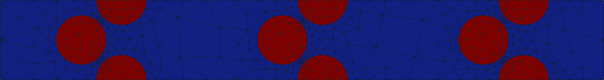

Helical chain with circular inclusions
This example shows the mesh generation for a unit cell of a helical chain with circular inclusions. The basic procedures of the model and mesh generation are pointed out and the resulting mesh is visualized. For the example, only the standard configuration is used. However, in order to show all available options - user configurations are passed as dictionaries to the individual classes and methods - the dictionaries containing the default values are passed. This means that, if they were not passed, the resulting mesh would be the same.
Code
# load numpy
import numpy as np
# Loading of the HelicalChain class
# Before the model and mesh generation can start, the required class has to be
# loaded. In this case it is the class HelicalChain
from gmshModel.Model import HelicalChain
# Initialization of the unit cell
# In order to generate a mesh for unit cells of a helical chain with circular
# inclusions, relevant data have to be passed for the initialization of
# a new object instance. For unit cells of the type under consideration, the
# following parameters are possible:
#
# inclusionRadius: float (mandatory)
# radius of the inclusions within the unit cell
#
# chainRadius: float (mandatory)
# radius of the helical chain
#
# theta: float (mandatory)
# angle (radian) between neighboring inclusions of the helical chain
#
# size: list/array (mandatory)
# array defining the size of the RVE in the individual directions
# -> size=[L_x, L_y, (L_z)]
#
# numberCells: list/array (optional)
# array defining the number of cells in the 3 spatial axis directions
# -> for two-dimensional problems, n_z is automatically set to 1
# -> numberCells=[n_x, n_y, n_z]
#
# inclusionType: string (mandatory)
# string defining the type of inclusions within the RVE
# -> currently, only circular (2D) and spherical (3D) inclusions are supported
#
# origin: list/array (optional)
# array defining the origin of the RVE
# -> origin=[O_x, O_y, (O_z)]
#
# periodicityFlags: list/array (optional)
# array with flags (0/1) whether the current coordinate direction has to be
# treated as periodic
# periodicityFlags=[0/1, 0/1, 0/1]
#
# domainGroup: string (optional)
# string defining which group the geometric objects defining the domain belong
# to (to reference this group within boolean operations)
#
# inclusionGroup: string (optional)
# string defining which group the geometric objects defining the inclusions
# belong to (to reference this group within boolean operations)
#
# gmshConfigChanges: dict (optional)
# dictionary for user updates of the default Gmsh configuration
#
initParameters={ # save all possible parameters in one dict to facilitate the method call
"numberCells": [3,1,1], # generate 3 unit cells in the 1-direction
"inclusionRadius": 1, # set the inclusion radius to 1
"chainRadius": 0.8, # set the chain radius to 1.2
"inclusionType": "Circle", # define inclusionType as "Sphere"
"chainDirection": [0,1,0], # generate chain in 3-direction
"theta": np.pi, # set angle between neighboring inclusions to 180 degrees (only plausible choice)
"size": [12, 4, 0], # set cell size (resulting layer distance of 4/3)
"origin": [0, 0, 0], # set cell origin to [0,0,0]
"periodicityFlags": [1, 1, 1], # define all axis directions as periodic
"domainGroup": "domain", # use "domain" as name for the domainGroup
"inclusionGroup": "inclusions", # use "inclusions" as name for the inclusionGroup
"gmshConfigChanges": {"General.Terminal": 0, # deactivate console output by default (only activated for mesh generation)
"Mesh.CharacteristicLengthExtendFromBoundary": 0, # do not calculate mesh sizes from the boundary by default (since mesh sizes are specified by fields)
}
}
testChain=HelicalChain(**initParameters)
# Gmsh model generation
# After all parameters for the chain are set, the Gmsh model can be generated.
# This process involves the definition of geometric objects, their combination
# to more complex shapes using boolean operations and the definition of physical
# groups, i.e. groups of elements that belong to the same material or part of
# the boundary. For helical chains, no additional options are required for the
# inclusion placement. To this end, the command is simply:
#
testChain.createGmshModel()
# Gmsh mesh creation
# After the model has been created using the Gmsh-Python-API, the meshing
# can be performed. To this end, refinement fields defining the mesh sizes
# within the model have to be calculated and added to the Gmsh model. Once, the
# mesh sizes are specified,the mesh can be generated. Available parameters are:
#
# threads: int
# number of threads to use for the meshing procedure
# refinementOptions: dict (optional)
# dictionary containing user updates for the refinement field calculation
#
meshingParameters={ # save all possible parameters in one dict to facilitate the method call
"threads": None, # do not activate parallel meshing by default
"refinementOptions": {"maxMeshSize": "auto", # automatically calculate maximum mesh size with built-in method
"inclusionRefinement": True, # flag to indicate active refinement of inclusions
"interInclusionRefinement": True, # flag to indicate active refinement of space between inclusions (inter-inclusion refinement)
"elementsPerCircumference": 18, # use 18 elements per inclusion circumference for inclusion refinement
"elementsBetweenInclusions": 3, # ensure 3 elements between close inclusions for inter-inclusion refinement
"inclusionRefinementWidth": 3, # use a relative (to inclusion radius) refinement width of 3 for inclusion refinement
"transitionElements": "auto", # automatically calculate number of transitioning elements (elements in which tanh function jumps from h_min to h_max) for inter-inclusion refinement
"aspectRatio": 1.5 # aspect ratio for inter-inclusion refinement: ratio of refinement in inclusion distance and perpendicular directions
}
}
testChain.createMesh(**meshingParameters)
# Save resulting mesh to file
# The mesh is generated and can be saved to a file. To this end, only the file
# name - possibly containing a directory and the extension of the wanted mesh
# format - has to be passed. The package supports all mesh file formats that are
# supported by meshio. If no filename is passed, meshes are stored to the current
# directory using the unique model name and the default mesh file format (.msh)
testChain.saveMesh("helicalChain2DCircle.vtu")
# Show resulting mesh
# To check the generated mesh, the result can also be visualized using built-in
# methods.
testChain.visualizeMesh()
# Close Gmsh model
# For a proper closing of the Gmsh-Python-API, the API has to be finalized. This
# can be achieved by calling the close() method of the model
testChain.close()
Result
If the mesh generation is successful, the result should look like this:
{kind=link}
In the image, 3 chains can be seen. The refinement between close inclusions ensures at least 3 elements between them.